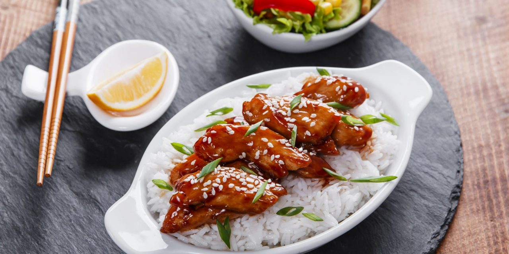
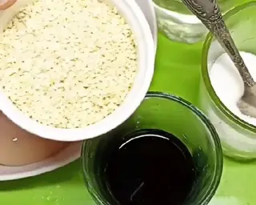
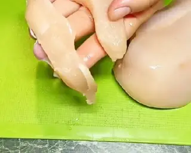
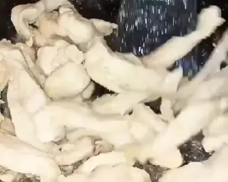
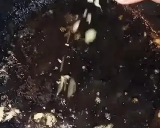
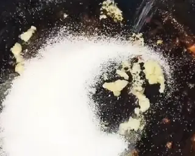

Куриное филе в соусе терияки

Ингридиенты:
- 2 шт. Филе куриное
- 50 мл Соус соевый
- 50 г Сахар
- 100 мл Водa
- 2-3 зубчика Чеснок
- по вкусу Кунжут
- Соль, специи
Инструкции с приготовления
- Куриное филе нарежь полосками и обжарь на растительном масле.


- Когда филе немного обжарилось выложи его в тарелку, а на сковороду выдави чеснок, всыпь сахар и залей водой. Пусть покипит до полного растворения сахара. Когда сахар растворится влей соевый соус. И снова оставь кипеть. Крышкой не накрывай и огонь оставь средний, чтоб хорошо кипело.



- Через время соус станет густым, теперь можешь добавить соль и специи.

- Минут за 5-10 до готовности посыпь кунжутом. На видео видно сколько соуса должно остаться.